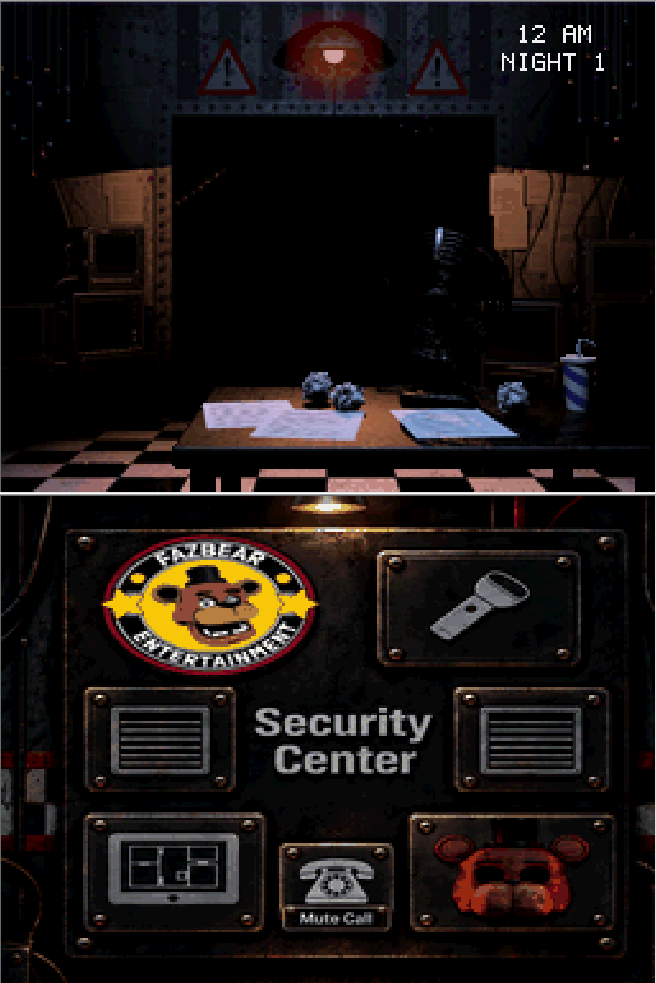
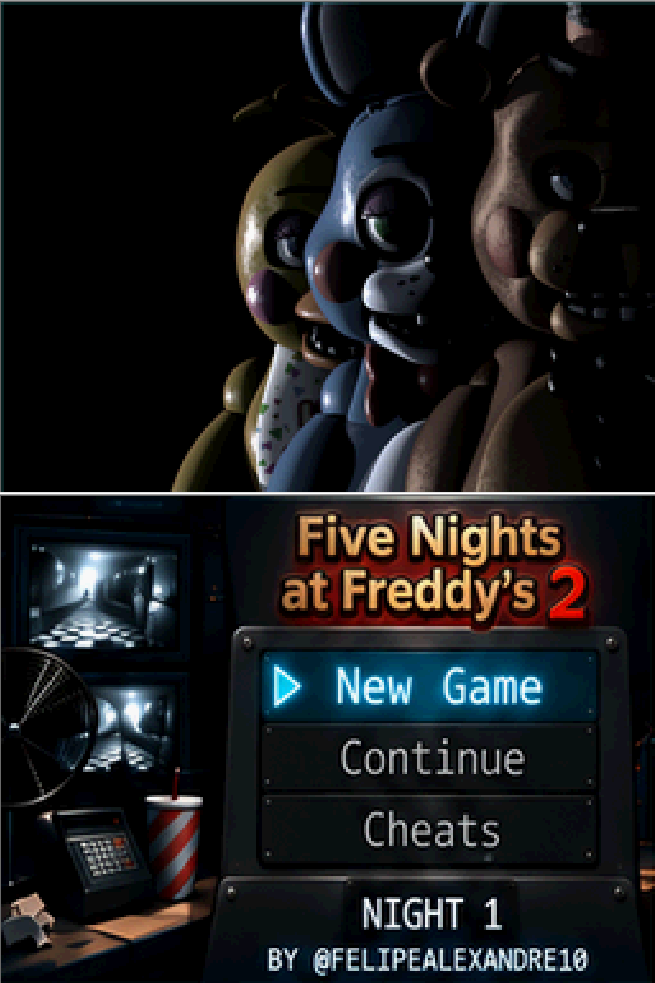
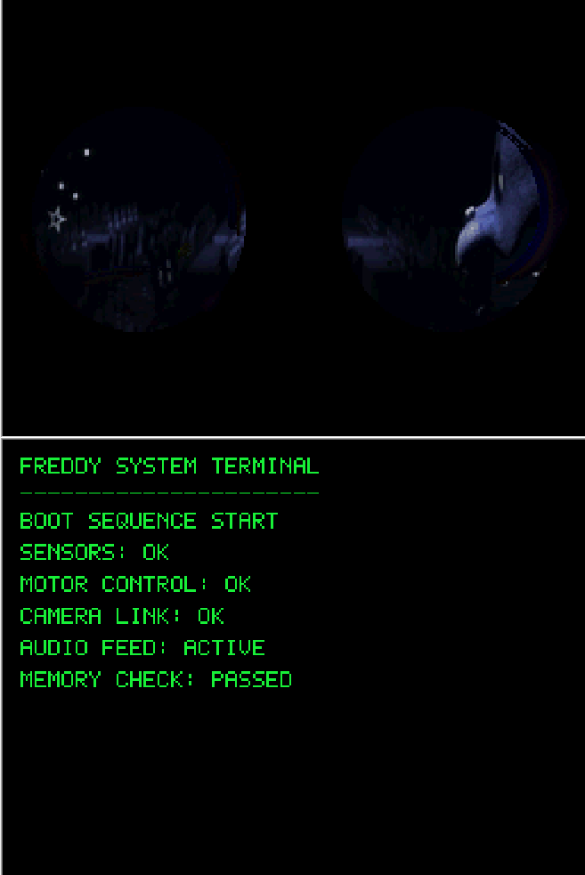
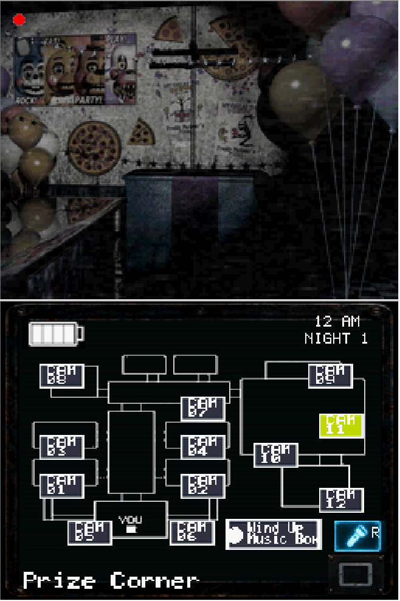
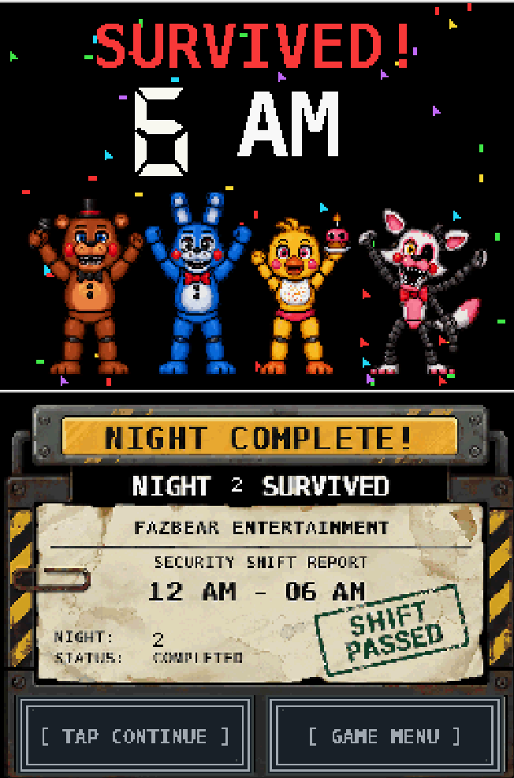

Sistema de câmeras
Tablet interativo, alternância de salas, iluminação e interface distribuída entre duas telas.
Uma reimplementação por engenharia reversa com interface própria, mecânicas adaptadas e interação nativa nas duas telas do Nintendo DSi XL.

DSi EMULATOR CAPTURE // OFFICEMais do que reproduzir o original, reconstruímos comportamentos e projetamos uma experiência própria para o DSi: menus, transições, carregamentos personalizados e controles concebidos para duas telas.
Tablet interativo, alternância de salas, iluminação e interface distribuída entre duas telas.
Comportamentos, rotas, janelas de reação e balanceamento entre noites.
Menu, introdução, cutscenes, carregamento, Game Over e vitória.
Gravação de gameplay realizada em um computador usando um emulador de Nintendo DSi. Veja as duas telas do jogo, menus e a experiência desenvolvida.
Capturas enviadas pelo desenvolvedor. Cada imagem mantém a disposição vertical das duas telas do DSi.




PLATFORM : NINTENDO DSi XL LANGUAGE : C / C++ TOOLCHAIN : devkitARM DISPLAY : DUAL SCREEN TARGET : MEMORY-AWARE BUILD RELEASE : V19.7 > INITIALIZING PORTFOLIO... > ENGINEERING SHOWCASE READY_
O desafio foi estudar o comportamento do jogo de PC, reimplementar seus sistemas em C/C++ e projetar novas interfaces, carregamentos e fluxos de interação para um console com memória restrita, tela sensível ao toque e duas áreas de exibição.
Na tela superior acontece a ação; na inferior, o jogador interage com um centro de segurança personalizado. Cada comando foi pensado para o formato portátil, sem reduzir o jogo a um vídeo ocupando apenas uma tela.
Toque nas salas do mapa na tela inferior para trocar a visualização da câmera na tela superior.
Acesse luzes do corredor e das ventilações e equipe a máscara pelo painel de controles.
Abra ou feche o tablet, consulte as câmeras e gerencie o sistema de vigilância sem perder a organização das duas telas.
Fluxos próprios de vitória, relatório de turno e botões de continuar ou retornar ao menu.
Interface de configuração planejada para ajustar os níveis de IA dos animatrônicos diretamente no DSi. A disponibilidade funcional deve ser conferida na build publicada.
Animações de loading, terminal de inicialização, telas de Game Over e vitória e estados de menu desenvolvidos para esta versão.
A comparação abaixo mostra os requisitos mínimos anunciados para o jogo original no PC e os recursos físicos do console. Esses valores não equivalem a um benchmark direto: representam plataformas e modelos de execução diferentes.
Não executamos o software de Windows no console nem simplesmente reduzimos os gráficos. Recriamos lógica e interfaces para o ambiente homebrew, com recursos e controles reorganizados para o hardware. A experiência incorpora elementos autorais de navegação, loading, apresentação e interação em duas telas.
Nota técnica: 1 GB e 16 MB são capacidades de memória de plataformas distintas; a comparação não demonstra, por si só, consumo real de RAM do jogo.Sequência de aviso e menu em teste; mensagens de diagnóstico presentes no binário.
1.00 MiB • ROM arquivadaEstrutura de título e seleção de Night 1/Custom Night identificável.
0.94 MiB • ROM arquivadaMais conteúdo embarcado e referências nominais a animatrônicos.
2.44 MiB • ROM arquivadaReferências a cenários do escritório, frames de máscara e feed de câmera.
5.27 MiB • ROM arquivadaRegistros de carregamento de áudio, Game Over e Night Complete.
5.54 MiB • ROM arquivadaDiagnósticos de relógio/tempo e referências a componentes do escritório.
5.54 MiB • ROM arquivadaAumento significativo do binário e novos dados de chamada noturna; conteúdo exato requer código-fonte.
10.51 MiB • ROM arquivadaDiagnósticos de câmera aberta, seleção e disponibilidade de Music Box.
22.04 MiB • ROM arquivadaAmpliação do conteúdo embarcado; alterações específicas não determináveis só pela ROM.
22.67 MiB • ROM arquivadaReferências a night_intro, dream_mask e dream_puppet; marco relatado como estável.
25.60 MiB • ROM arquivadaBuild BootFix nomeada; referências adicionais a câmera estática.
25.65 MiB • ROM arquivadaTextos NIGHT SURVIVED e TAP CONTINUE presentes no binário.
25.17 MiB • ROM arquivadaMelhorias de carregamento, Game Over, vitória, IA e fluxos de câmera foram relatadas ao longo do desenvolvimento. ROMs dessas revisões não estão neste pacote histórico para comparação binária.
Informação contextual, pendente de confronto com fontesEste projeto demonstra aprendizado contínuo, raciocínio lógico, depuração, otimização e capacidade de transformar requisitos complexos em software funcional.